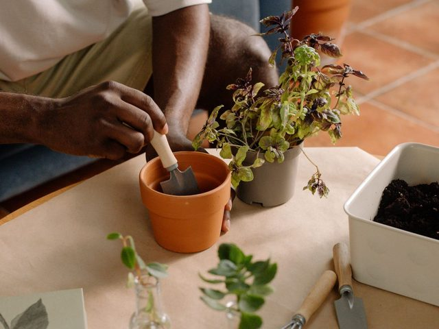
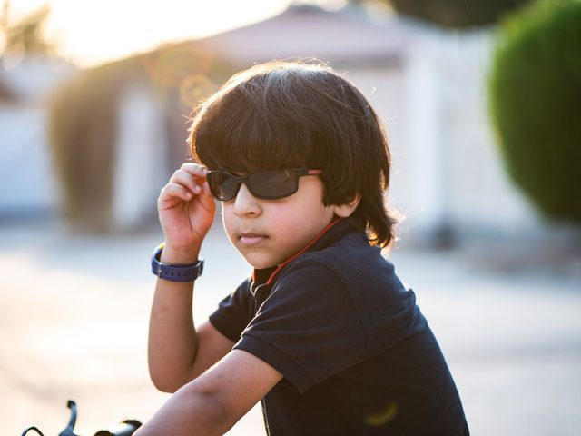
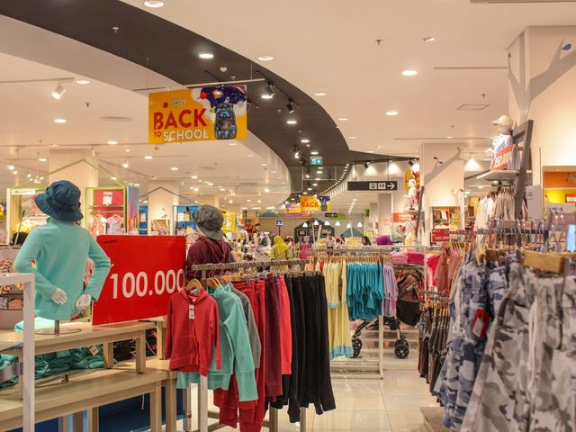
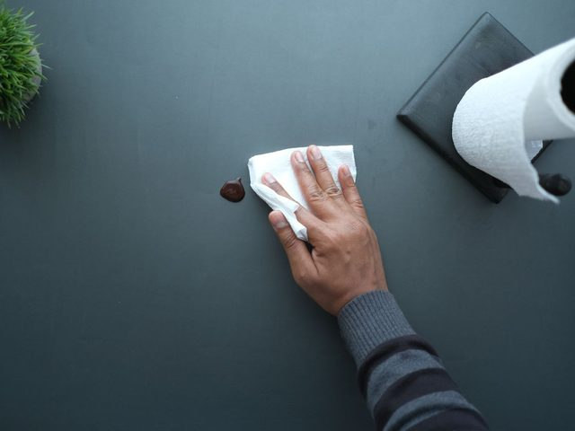
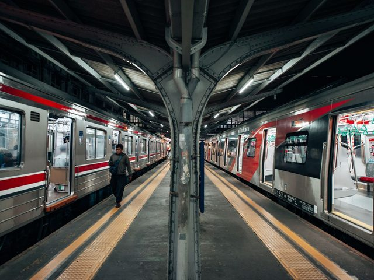
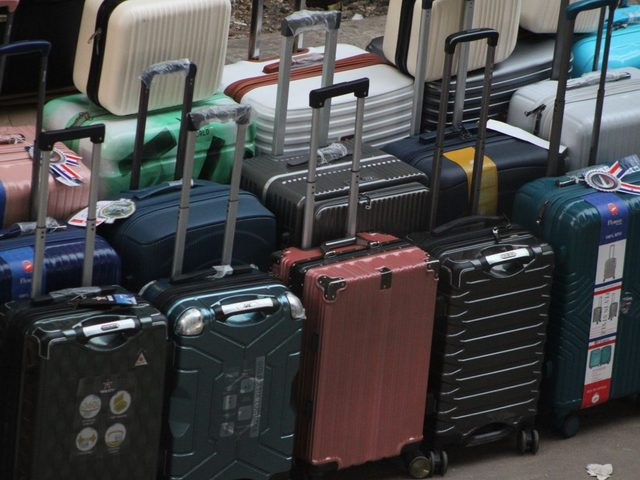

LALA WORD · UNIT 6
一字多義（六）
The Way We Change
20 個單字一字多義
本單元單字一覽
change 是改變，也是「零錢」；plant 是植物，也是「工廠」。這個單元有 8 個主題單字、12 個更多單字。
changeloselearnliveplantwayrestmissagecampcooldepartmentjustoilrollstationstopstorytripvisit
每個字先聽 🔊，再一個意思一個意思看例句。
1. change 主題單字．3 個意思
change
change - changed - changed - changing
n.改變；變化
There are some changes to our class schedule.
我們的課表有一些變動。
n.零錢
Here is your change. Thank you!
這是找您的零錢，謝謝！
v.改變；更換change one's mind 改變心意；change into 換成
I changed my mind. I want the red one.
我改變主意了，我要紅色的。
2. lose 主題單字．2 個意思

lose
lose - lost - lost - losing
v.弄丟；失去lose weight 減重；lose interest 失去興趣；lose one's voice 失聲
I lost my umbrella on the bus.
我把雨傘掉在公車上了。
v.輸
Our team lost the game 2 to 3.
我們隊以二比三輸了比賽。
3. learn 主題單字．3 個意思

learn
learn - learned（learnt） - learned（learnt） - learning
v.學習learn to + V 學會；learn one's lesson 學到教訓
I want to learn to play the piano.
我想學彈鋼琴。
v.得知learn about / of 得知
We learned about the news from TV.
我們從電視得知這個消息。
v.記住；背熟learn… by heart 背熟
Learn these words by heart.
把這些單字背起來。
4. live 主題單字．4 個意思

live
live - lived - lived - living（動詞唸 [lɪv]，形容詞唸 [laɪv]）
v.生活；過活live on 靠…過活
People can't live without water.
人沒有水無法生活。
v.居住
I live in Kaohsiung with my family.
我和家人住在高雄。
adj.活的
The shop sells live fish and crabs.
這家店賣活魚和活螃蟹。
adj.現場的
We watched a live show last night.
我們昨晚看了一場現場表演。
5. plant 主題單字．4 個意思

plant
plant - planted - planted - planting
n.植物
Plants need water and sunlight.
植物需要水和陽光。
n.工廠
My uncle works at a power plant.
我叔叔在發電廠工作。
v.種植
We planted a tree in the school garden.
我們在學校花園種了一棵樹。
v.輕放（親吻）plant a kiss on 突然親一下
Mom planted a kiss on the baby's face.
媽媽在寶寶臉上親了一下。
6. way 主題單字．3 個意思

way
複數 ways
n.方法；方式way to + V 做…的方法
This is the best way to learn English.
這是學英文最好的方法。
n.道路；方向lose one's way 迷路；the other way around 相反
Can you tell me the way to the station?
你可以告訴我去車站的路嗎？
n.距離
The beach is a long way from here.
海邊離這裡很遠。
7. rest 主題單字．5 個意思

rest
rest - rested - rested - resting
v.休息
Let's stop and rest for a while.
我們停下來休息一下吧。
n.休息take / have a rest 休息一下
You look tired. Take a rest.
你看起來很累，休息一下吧。
v.靠在；倚靠
She rested her head on my shoulder.
她把頭靠在我的肩膀上。
v.安息rest in peace 安息
May he rest in peace.
願他安息。
n.其餘；剩下the rest 其餘的
I ate half of the pizza and saved the rest.
我吃了半個披薩，剩下的留著。
8. miss 主題單字．5 個意思

miss
miss - missed - missed - missing
v.錯過；沒趕上
Hurry up, or we will miss the bus.
快點，不然我們會趕不上公車。
v.沒打中；沒接到
He kicked the ball but missed the goal.
他踢了球但沒射進球門。
v.想念
I miss my grandma a lot.
我很想念奶奶。
n.小姐；老師（Miss）
Miss Wang is our music teacher.
王老師是我們的音樂老師。
n.失誤；沒打中
That was a bad miss.
那一球失誤得很可惜。
9. age 更多單字．4 個意思

age
age - aged - aged - aging
n.年紀；年齡at the age of 在…歲時；act one's age 舉止符合年紀
He started swimming at the age of five.
他五歲開始學游泳。
n.時代
We live in the age of the internet.
我們生活在網路時代。
n.很長的時間（ages）
I haven't seen you for ages!
好久不見！
v.變老；熟成
The cheese is aged for a year.
這塊起司熟成了一年。
10. camp 更多單字．3 個意思

camp
camp - camped - camped - camping
n.營隊
I went to an English camp last summer.
我去年夏天參加英語營。
n.營地
We set up camp near the lake.
我們在湖邊紮營。
v.露營go camping 去露營
We camped in the mountains for two nights.
我們在山上露營兩晚。
11. cool 更多單字．4 個意思

cool
cool - cooler - coolest；cool - cooled - cooled - cooling
adj.涼爽的
It's cool in the morning.
早上很涼爽。
adj.冷靜的as cool as a cucumber 非常冷靜
Stay cool and think.
保持冷靜，好好想想。
adj.酷的
Your new shoes look cool!
你的新鞋看起來好酷！
v.使冷卻cool down 冷卻；冷靜下來
Let the soup cool down before you eat it.
湯放涼一點再喝。
12. department 更多單字．2 個意思

department
複數 departments
n.（公司的）部門；（百貨的）專櫃department store 百貨公司
Mom bought shoes at a department store.
媽媽在百貨公司買了鞋子。
n.（大學的）系
My sister studies in the English Department.
我姊姊讀英文系。
13. just 更多單字．5 個意思

just
adv.剛才；剛剛just now 剛才
I just finished my homework.
我剛寫完功課。
adv.只是；僅僅
It's just a joke.
那只是個玩笑。
adv.正好；恰好
This dress is just right for you.
這件洋裝你穿剛剛好。
adv.實在；很
The view is just beautiful.
風景實在太美了。
adj.公正的
The teacher is fair and just.
這位老師很公平公正。
14. oil 更多單字．3 個意思

oil
oil - oiled - oiled - oiling
n.油；石油
Fry the eggs in a little oil.
用一點油煎蛋。
v.給…上油
Dad oiled the old bike.
爸爸幫舊腳踏車上油。
n.油畫
There are many famous oils in this museum.
這間美術館有很多名畫（油畫）。
15. roll 更多單字．5 個意思

roll
roll - rolled - rolled - rolling
v.滾動；翻動roll over 翻身
The ball rolled down the hill.
球滾下山坡。
v.捲roll up 捲起
Roll up your sleeves before you wash the dishes.
洗碗前把袖子捲起來。
n.一捲
We need a new roll of toilet paper.
我們需要一捲新的衛生紙。
n.小圓麵包
I had a bread roll for breakfast.
我早餐吃了一個小圓麵包。
n.名單；名冊
The teacher called the roll.
老師點名。
16. station 更多單字．3 個意思

station
station - stationed - stationed - stationing
n.車站；局police station 警察局；fire station 消防局；gas station 加油站
Let's meet at the train station.
我們在火車站碰面。
n.電臺
This radio station plays great music.
這個電臺播的音樂很好聽。
v.駐紮
His dad was stationed on Kinmen.
他爸爸以前駐守在金門。
17. stop 更多單字．4 個意思

stop
stop - stopped - stopped - stopping
v.停止；停留stop + V-ing 停止做；stop to + V 停下來去做；stop by 順道拜訪
Stop talking and listen!
別說話，注意聽！
v.阻止stop… from + V-ing 阻止…做
Nobody can stop him from trying.
沒有人能阻止他嘗試。
n.停止
The car came to a stop.
車子停下來了。
n.車站；站牌bus stop 公車站
Get off at the next stop.
在下一站下車。
18. story 更多單字．3 個意思

story
複數 stories
n.故事bedtime story 睡前故事；It's a long story. 說來話長
Grandpa told us a funny story.
爺爺說了一個好笑的故事給我們聽。
n.說法；藉口make up a story 編藉口
He made up a story about being sick.
他編了一個生病的藉口。
n.樓層
Our school building has five stories.
我們的校舍有五層樓。
19. trip 更多單字．2 個意思

trip
trip - tripped - tripped - tripping
n.旅行；旅程go on a trip 去旅行；field trip 校外教學；round-trip 來回
We went on a trip to Hualien.
我們去花蓮旅行。
v.絆倒trip over 被…絆倒
Be careful. Don't trip over the box.
小心，別被箱子絆倒。
20. visit 更多單字．3 個意思

visit
visit - visited - visited - visiting
v.參觀；拜訪
We visited the National Palace Museum.
我們參觀了故宮博物院。
v.瀏覽（網站）
Visit our website for more information.
請瀏覽我們的網站了解更多。
n.拜訪；參觀pay a visit 拜訪
Grandpa paid us a visit last Sunday.
爺爺上星期天來看我們。
一字多義：最常見 vs. 容易忽略的意思
| 單字 | 最常見的意思 | 容易忽略的意思 |
|---|---|---|
| change | 改變 | 零錢 |
| live | 住 | 活的；現場的（唸 [laɪv]） |
| plant | 植物；種植 | 工廠 |
| rest | 休息 | 其餘的 |
| miss | 錯過；想念 | 小姐；老師 |
| just | 剛剛；只是 | 公正的 |
| roll | 滾動 | 一捲；小圓麵包；名單 |
| story | 故事 | 樓層；藉口 |
| trip | 旅行 | 絆倒 |
stop + V-ing 和 stop + to V
| 句型 | 意思 | 例句 |
|---|---|---|
| stop + V-ing | 停止正在做的事 | He stopped playing games.（不玩了） |
| stop + to V | 停下來，去做另一件事 | He stopped to drink water.（停下來喝水） |
| stop… from + V-ing | 阻止…做 | The rain stopped us from going out. |
常用片語
| 片語 | 意思 | 例句 |
|---|---|---|
| change one's mind | 改變心意 | She changed her mind. |
| lose weight | 減重 | Dad wants to lose weight. |
| learn… by heart | 背熟 | Learn the poem by heart. |
| take a rest | 休息一下 | Let's take a rest. |
| pay a visit | 拜訪 | We paid Grandma a visit. |
| go on a trip | 去旅行 | They went on a trip to Japan. |
快問快答：這句的 粗體字 是什麼意思？
1I changed my mind. I want the red one.改變；更換
2Our team lost the game 2 to 3.輸
3Learn these words by heart.記住；背熟
4We watched a live show last night.現場的
5Mom planted a kiss on the baby's face.輕放（親吻）
6The beach is a long way from here.距離
7I ate half of the pizza and saved the rest.其餘；剩下
8That was a bad miss.失誤；沒打中
快問快答：這句的 粗體字 是什麼意思？
1The cheese is aged for a year.變老；熟成
2We camped in the mountains for two nights.露營
3Let the soup cool down before you eat it.使冷卻
4My sister studies in the English Department.（大學的）系
5The teacher is fair and just.公正的
6There are many famous oils in this museum.油畫
7The teacher called the roll.名單；名冊
8His dad was stationed on Kinmen.駐紮
學完了！接下來
複習方法
review
- 回到「📗 單字卡」，按「遮中文」，看例句說出每個意思
- 特別記「容易忽略的意思」（例如 pen 圍欄、ball 舞會）
- 每個例句跟著 🔊 唸一次
準備好了
- 按右上角「📝 前往測驗」
- 測驗錯的題目要訂正到全對
- 訂正完成補送 1 點